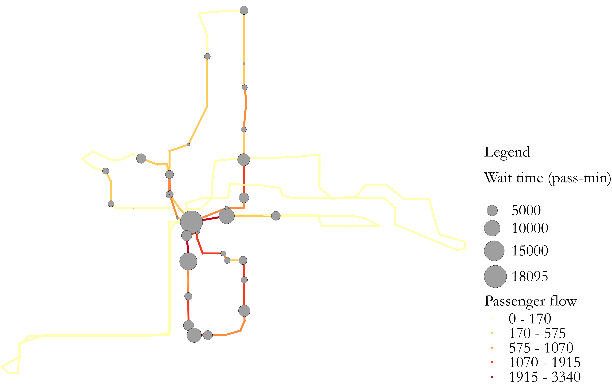
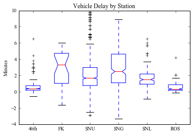

- Transit automated data (AFC, APC, AVL) mining
- Transit network design
- Transit scheduling
- Transit route choice
- Transit assignmnet

About Me
Hello!, I'm a PhD candidate in the Department of Civil, Environmental, and Geo-Engineering at the University of Minnesota, advised by Alireza Khani.
In general, I'm interested in researching public transit and its emerging technologies. Specifically, I'm interested on problems associated to
- Transit operations and planning
- Transit integration with emerging modes
- Ridesharing
- Autonomous vehicles
- Drones
- Park-and-ride
- Transit electrification
- Uncertainty modeling in Transportation
- Stochastic shortest path
- Day-to-day route choice
- Transit reliability
If you'd like to chat about any of the above topics, please email me at [LAST NAME]372@umn.edu.
Research
Doctoral Dissertation
- "Modeling and Design of Integrated Transit Systems with Strategic Passenger Behavior" 2022. PDF
Abstract: Experimental evidence shows that the uncertainty in travel time causes transit passengers to employ "strategies" when traveling between various origin-destination pairs. Such strategic behavior helps passengers adapt to the varying traffic conditions in the network. The current dissertation develops modeling frameworks to predict strategic passenger behavior in stochastic and time-dependent transit networks and use it for the design and long-term planning of integrated transit systems. It makes four principal contributions. First, it develops routing algorithms to describe the strategic behavior of transit and park-and-ride passengers using online information about road congestion and bus arrival at stops when traveling in a stochastic and time-dependent network. Second, to predict the average passenger flow on each link of the network, it develops a schedule-based transit assignment models with online information for uncapacitated and capacitated transit networks. Third, it proposes an optimization model to design transit routes' alignment and corresponding frequencies incorporating the strategic passenger behavior. Fourth, it develops an optimization model to design an integrated MoD and transit systems to decide which transit routes to operate, the frequency of operating transit routes, and the MoD fleet size required to address the transit fi rst-mile last-mile problem. Efficient algorithms are devised to solve the proposed models. Numerical experiments show that the park-and-ride passengers commuting from suburban regions to Downtown Minneapolis can save around 36 hours every year by employing strategic routing. The transit assignment results show complex passenger behavior as passengers consider alternative routes to avoid missing transfers and denied boarding due to congestion. Finally, the design results show a signi cant improvement in the congestion in the city center of the City of Sioux Falls with the introduction and optimization of the
Master's Thesis
- "Transit Origin Destination Estimation using Automated Data" 2019. PDF
Abstract: Development of an origin-destination (OD) demand matrix is crucial for transit planning. The development process is facilitated by transit automated data, making it possible to mine boarding and alighting patterns on an individual basis. This thesis presents novel methods for estimating transit OD matrix using automatically collected data. Depending on the type of transit automated data, there are two methods presented. A novel trip chaining method which uses Automatic Fare Collection (AFC), Automatic Vehicle Location (AVL), and General Transit Feed Specification (GTFS) data is proposed to infer the most likely trajectory of individual transit passenger. The method relaxes the assumptions on various parameters used in the existing trip chaining algorithms such as transfer walking distance threshold, buffer distance for selecting the boarding location, the time window for selecting the vehicle trip, etc. The thesis also proposes a method for estimating the transit route origin-destination (OD) matrix utilizing Automatic Passenger Count (APC) data. It uses $l_0$ norm regularizer, which leverages the sparsity present in the actual OD matrix. The technique is popularly known as compressed sensing (CS). The applications of both methods using automated data from Twin Cities, MN are also presented. The results show improved accuracy and more inference rate in calculating the OD matrix using trip chaining. Similarly, compressed sensing was found to work impressively well in evaluating transit route OD matrix within small errors.
Publications
- Pramesh Kumar and Alireza Khani. "Schedule-based Transit Assignment with Online Information" Under review 2022. PDF
- Pramesh Kumar and Alireza Khani. "An Exact Method for Solving the Bi-level transit Network Design Problem" Under review 2022.
- Xinlian Yu, Pramesh Kumar, Alireza Khani, Jingxu Chen. "An Integrated Framework for Locating Depots in Shared Autonomous Vehicle Systems" Under review 2022. SSRN
- Pramesh Kumar and Alireza Khani. "Planning of integrated mobility-on-demand and urban transit networks." Under review 2022. arXiv
- Pramesh Kumar and Alireza Khani. "Adaptive park-and-ride choice on time-dependent stochastic multimodal transportation network." Networks and Spatial Economics 21, 771-800, 2021. Journal
- Pramesh Kumar, Alireza Khani, Eric Lind, and John Levin. "Estimation and mitigation of epidemic risk on a public transit route using automatic passenger count data." Transportation Research Record, 2675(5):94-106, 2021. PDF
- Pramesh Kumar and Alireza Khani. "An algorithm for integrating peer-to-peer ridesharing and schedule-based transit system for first mile/last mile access." Transportation Research Part C: Emerging Technologies, 122, 102891, 2021. arXiv
- Pramesh Kumar and Alireza Khani. "Evaluating Special Event Transit Demand: A Robust Principal Component Analysis Approach." IEEE Transactions on Intelligent Transportation Systems, vol. 22, no. 12, pp. 7370-7382, Dec. 2021. PDF
- Pramesh Kumar and Alireza Khani. "Estimation of Passenger Wait Time using Automatically Collected Transit Data." Public Transport, 12, 299-311, 2020. PDF
- Pramesh Kumar, Alireza Khani and Gary Davis. "Transit Route Origin-Destination Matrix Estimation using Compressed Sensing." Transportation Research Record, 2673(10):164-174, 2019. PDF
- Pramesh Kumar, Alireza Khani, and Qing He. "A Robust Estimation of Transit Passenger Trajectories using Automated Data." Transportation Research Part C: Emerging Technologies, 95: 731-747, 2018. PDF
Abstract: Most public transportation services deviate from the published schedule. To cope with the delay caused by the unreliable service, passengers use online information about the bus arrival time that affects their route choice behavior. Current schedule-based transit assignment models fail to capture the passengers' adaptive response to unreliable service, which causes an inaccurate estimation of passenger wait time and passenger loads on various transit routes. The current study proposes schedule-based transit assignment models that incorporate online bus arrival information when modeling the passenger route choice in a stochastic and time-dependent transit network. We propose that passengers employ strategies when traveling between different origin-destination pairs not only due to the limited capacity of vehicles but also to cope with the transit delay. The passenger routing problem is modeled as a Markov Decision Process, and efficient algorithms are proposed to solve this problem. Depending on the vehicle capacity, two types of assignment models are presented, namely, uncapacitated and capacitated assignments. When penalties for arriving at the destination outside the arrival time window are not applied, the uncapacitated assignment problem is formulated as a linear program. On the other hand, the capacitated assignment is formulated as a variational inequality problem, for which an efficient MSA-based heuristic solution algorithm is proposed. Computational experiments are presented for a schedule-based transit network.
Abstract: Transit network design is the fundamental problem that involves finding routes and corresponding frequencies in a transportation network to serve a given demand cost-effectively. It would be na\"ive for a transit agency to design a network without incorporating passenger behavior. The current study captures the passenger behavior in the network design by proposing a bi-level transit network design model. It considers both passengers' and operator's perspectives in the upper level, including passenger travel time, limited bus fleet, the operating cost of buses, bus capacity, road capacity, and the number of transfers experienced by passengers. The lower level problem is the optimal strategy frequency-based transit assignment model. The design model outputs the optimal transit routes and their operating frequencies. Due to its complexity, the current research develops a tailored branch-and-benders cut algorithm to solve the problem. Numerical experiments on different network instances show the promising performance of the proposed method.
Abstract: This study presents an integrated framework for locating depots in a Shared autonomous vehicle (SAV) system under demand uncertainty. A two-stage stochastic mixed integer programming (MIP) model is formulated to optimize the number and locations of depots in a SAV system, where demand uncertainty is represented by multiple scenarios with occurrence probability. Unlike previous studies that consider station-based vehicle relocations, we take into account the dynamics of vehicle movements in the transportation network by forming a trip chain for each AV. This feature, while useful in bringing the model closer to reality, significantly increases the dimension of the problem and thus raise challenges for solving the model efficiently for large-scale problems. An enhanced Benders decomposition-based algorithm with multiple Pareto-optimal cuts via multiple solutions is developed to solve the proposed model. The proposed modelling framework and the solution algorithm are tested using two different sizes of transportation networks. Computational analysis demonstrates that the proposed algorithm is able to handle relatively large instances within acceptable computational cost, and the algorithm is more efficient than the classic Benders algorithm and directly solving the MIP model. Meanwhile, meaningful insights regarding the optimal deployment of depots in SAV systems are also delivered under different parametric and demand pattern settings.
 Abstract: We envision a multimodal transportation system where Mobility-on-Demand (MoD) service is used to serve the first mile and last mile of transit trips. For this purpose, the current research formulates an optimization model for designing an integrated MoD and urban transit system. The proposed model is a mixed-integer non-linear programming model that captures the strategic behavior of passengers in a multimodal network through a passenger assignment model. It determines which transit routes to operate, the frequency of the operating routes, the fleet size of vehicles required in each transportation analysis zone to serve the demand, and the passenger flow on both road and transit networks. A Benders decomposition approach with several enhancements is proposed to solve the given optimization program. Computational experiments are presented for the Sioux Falls multimodal network. The results show a significant improvement in the congestion in the city center with the introduction and optimization of the integrated transportation system. It improves the total number of served passengers and their level of service in comparison to the base optimized transit system. Finally, managerial insights for deploying such multimodal service are provided.
Abstract: In transportation networks with stochastic and dynamic travel times, park-and-ride decisions are often made adaptively considering the realized state of traffic. That is, users continue driving towards their destination if the congestion level is low, but may consider taking transit when the congestion level is high. This adaptive behavior determines whether and where people park-and-ride. We propose to use a Markov decision process to model the problem of commuters’ adaptive park-and-ride choice behavior in a transportation network with time-dependent and stochastic link travel times. The model evaluates a routing policy by minimizing the expected cost of travel that leverages the online information about the travel time on outgoing links in making park-and-ride decisions. We provide a case study of park-and-ride facilities located on freeway I-394 in Twin Cities, Minnesota. The results show a significant improvement in the travel time by the use of park-and-ride during congested conditions. It also reveals the time of departure, the state of the traffic, and the location from where park-and-ride becomes an attractive option to the commuters. Finally, we show the benefit of using online routing in comparison to an offline routing algorithm.

Abstract: This paper studies the potential spread of infectious disease through passenger encounters in a public transit system using automatic passenger count (APC) data. An algorithmic procedure is proposed to evaluate three different measures to quantify these encounters. The first two measures quantify the increased possibility of disease spread from passenger interaction when traveling between different origin–destination pairs. The third measure evaluates an aggregate measure quantifying the relative risk of boarding at a particular stop of the transit route. For calculating these measures, compressed sensing is employed to estimate a sparse passenger flow matrix planted in the underdetermined system of equations obtained from the APC data. Using the APC data of Route 5 in Minneapolis/St. Paul region during the COVID-19 pandemic, it was found that all three measures grow abruptly with the number of passengers on board. The passenger contact network is densely connected, which further increases the potential risk of disease transmission. To reduce the relative risk, it is proposed to restrict the number of passengers on-board and analyze the effect of this using a simulation framework. It was found that a considerable reduction in the relative risk can be achieved when the maximum number of passengers on-board is restricted below 15. To account for the reduced capacity and still maintain reasonable passenger wait times, it would then be necessary to increase the frequency of the route.

Abstract: Due to limited transit network coverage and infrequent service, suburban commuters often face the transit first mile/last mile (FMLM) problem. To deal with this, they either drive to a park-and-ride location to take transit, use carpooling, or drive directly to their destination to avoid inconvenience. Ridesharing, an emerging mode of transportation, can solve the transit first mile/last mile problem. In this setup, a driver can drive a ride-seeker to a transit station, from where the rider can take transit to her respective destination. The problem requires solving a ridesharing matching problem with the routing of riders in a multimodal transportation network. We develop a transit-based ridesharing matching algorithm to solve this problem. The method leverages the schedule-based transit shortest path to generate feasible matches and then solves a matching optimization program to find an optimal match between riders and drivers. The proposed method not only assigns an optimal driver to the rider but also assigns an optimal transit stop and a transit vehicle trip departing from that stop for the rest of the rider’s itinerary. We also introduce the application of space-time prism (STP) (the geographical area which can be reached by a traveler given the time constraints) in the context of ridesharing to reduce the computational time by reducing the network search. An algorithm to solve this problem dynamically using a rolling horizon approach is also presented. We use simulated data obtained from the activity-based travel demand model of Twin Cities, MN to show that the transit-based ridesharing can solve the FMLM problem and save a significant number of vehicle-hours spent in the system.
Abstract: The special events such as games, concerts, state fairs, etc. attract a large amount of population, which requires proper planning of transit services to meet the induced demand. Previous studies have proposed methods for estimating an average daily weekday demand, which have an inherent disadvantage in estimating the demand for a special event. We solve an idealized version of this problem i.e., we decompose a special event affected demand matrix into a regular and an outlier matrix. We start with detecting the special events in large scale transit data using the Mahalanobis distance, an outlier detection method for high dimensional data. Then, a special event demand is evaluated using state-of-the-art dimensionality reduction technique known as robust principal component analysis (RPCA), which is formulated as a convex optimization program. We show the application of the proposed method using Automatic Passenger Count (APC) data from Twin Cities, MN, USA. The methods are general and can be applied to any type of data related to the flow of passengers available with respect to time. Of practical interest, the methods are scalable to large-scale transit systems.

Abstract: Among the many ways to improve a transit system is a reduction in travel time as experienced by the passenger. Hence, passenger waiting times remain a topic of interest among transit planners. In this study, the effects of transit vehicle delays on passenger waiting time is investigated, as well as the effects of transfer status, boarding location, time of day, and rider travel frequency. The data used in this study were collected using automatic fare collection (AFC) and automatic vehicle location (AVL) technology. A trip chaining algorithm is used to infer the trajectory of each passenger, and as a result produce measures of passenger waiting time and vehicle delay. An analysis of an arterial Bus Rapid Transit (aBRT) line in Saint Paul, Minnesota reveals a waiting time model consistent with previous literature, a positive relationship between vehicle delay and passenger waiting time, and an insignificant relationship between transfer status and passenger waiting time. Finally, a simple model relating waiting time and vehicle delay is provided for the purpose of transit planning and waiting time estimation.

Abstract: The development of an origin–destination (OD) demand matrix is crucial for transit planning. With the help of automated data, it is possible to estimate a stop-level OD matrix. We propose a novel method for estimating transit route OD matrix using automatic passenger count (APC) data. The method uses l0 norm regularizer, which leverages the sparsity in the actual OD matrix. The technique is popularly known as compressed sensing (CS). We also discuss the mathematical properties of the proposed optimization program and the complexity of solving it.We used simulation to assess the accuracy and efficiency of the method and found that the proposed method is able to recover the actual matrix within small errors. With increased sparsity in the actual OD matrix, the solution gets closer to the actual value of the matrix. The method was found to perform more efficiently even for different demand patterns. We also present a real numerical example of OD estimation of the A Line Bus Rapid Transit (BRT) route in Twin Cities, MN.
Abstract: Development of an origin-destination demand matrix is crucial for transit planning. The development process is facilitated by automated transit smart card data, making it possible to mine boarding and alighting patterns on an individual basis. This research proposes a novel trip chaining method which uses Automatic Fare Collection (AFC) and General Transit Feed Specification (GTFS) data to infer the most likely trajectory of individual transit passengers. The method relaxes the assumptions on various parameters used in the existing trip chaining algo- rithms such as transfer walking distance threshold, buffer distance for selecting the boarding location, time window for selecting the vehicle trip, etc. The method also resolves issues related to errors in GPS location recorded by AFC systems or selection of incorrect sub-route from GTFS data. The proposed trip chaining method generates a set of candidate trajectories for each AFC tag to reach the next tag, calculates the probability of each trajectory, and selects the most likely trajectory to infer the boarding and alighting stops. The method is applied to transit data from the Twin Cities, MN, which has an open transit system where passengers tap smart cards only once when boarding (or when alighting on pay-exit buses). Based on the consecutive tags of the passenger, the proposed algorithm is also modified for pay-exit cases. The method is compared to previous methods developed by the researchers and shows improvement in the number of in- ferred cases. Finally, results are visualized to understand the route ridership and geographical pattern of trips.
Teaching
Teaching Assistant
- CEGE 3201: Transportation Engineering. Spring 2018-20.
- CEGE 8217: Transportation Network Analysis. Spring 2022.
Guest Lecturer
- CEGE 5180: Transportation Planning, Operations, and Control. Fall 2019
- CEGE 5214: Transportation Systems Analysis. Fall 2020-21
Certification
- Teaching Assistant and Postdoc Professional Development Program, Center of Education and Innovation, University of Minnesota Certificate
The Teaching Assistant and Postdoc Professional Development Program (TAPD) offers graduate students and postdocs formal recognition for investing in teaching-related professional development.
Service
- Interdisciplinary Transportation Student Organization, ITE, 2018-20 Program website
- Undergraduate Research Symposium, U of M, 2018-20 Program website
- Journal Referee
- Transportation Research Part C: Emerging Technologies
- IEEE Transactions on Intelligent Transportation Systems
- European Journal of Operations Research
- Public Transport
- Transportation Research Record
- Journal of Advanced Transportation
- Transportation Research Board Annual Meeting
- Planning Committee Member
- ITE Student Leadership Summit, 2018
- Thomso, IIT Roorkee's Annual Cultural Festival, 2012-13
- Reviewer, Council of Graduate Students Grants Committee Committee Website
Worked as an officer and later as a treasurer. I organized seminars, workshoops, and field trips related to transportation.
The Undergraduate Research Symposium is an annual research fair at U of M that gives all undergraduate researchers a chance to share their research, scholarly and creative projects with the University community. I served as a judge where I provided constructive feedback on the students’ presentations.
EMAIL: [LAST NAME]372@UMN.EDU.
 LICENSED UNDER CC BY-SA 2015-2021.
LICENSED UNDER CC BY-SA 2015-2021.